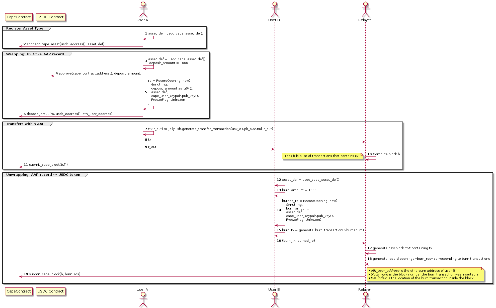

Introduction
The CAPE system is a set of components which purpose is to enable users to
- Create, Transfer and Freeze assets.
- Wrap ERC20 tokens into CAPE asset records.
- Unwrap CAPE asset records back into ERC20 tokens.
Smart contracts
CAPE Contract
The CAPE Smart contract allows bidirectional transfers of assets between Ethereum and the CAPE system. Its design is inspired by Tornado Cash where an ERC20 token transfer can trigger automatically the creation of some asset record inside the CAPE Blockchain. Transferring assets from CAPE to Ethereum relies on the idea of burning/destroying the asset record and unlock it on the other side (Ethereum) also in an atomic fashion.
Interfaces
The CAPE contract has 4 public interfaces:
constructorthat is run only once when the contract is deployed.sponsorCapeAssetwhich allows to register a new asset type bound to an ERC20 token.depositErc20allows to wrap ERC20 tokens into some asset records of a specific type that has already been registered earlier throughsponsorCapeAsset.submitCapeBlockallows anyone to submit a block of CAPE transactions. If all the transactions in this block are valid then the state of the CAPE blockchain will be updated accordingly. If a transaction in the block is of type BURN, the asset records will be destroyed and the equivalent amount of ERC20 token will be sent to some specified ethereum address. This process is called unwrapping.
Sequence Diagram

In the sequence diagram above we describe how the CAPE contract can be used to wrap/unwrap ERC20 tokens and make transfers within the CAPE blockchain.
- Sponsor asset type: Before being able to wrap an ERC20 token into a CAPE asset record, it is necessary to create an asset type which will bind an ERC20 to an identifier and a CAPE policy. This new asset type is created by some sponsor participant (user A in the diagram). Once created it is provided to the CAPE contract which will store it along with the address of the corresponding ERC20 token.
- Wrapping: USDC → CAPE asset record: User A wraps his USDC tokens into some CAPE records using some asset type created in the previous phase.
- Transfers within CAPE: User A sends (part of) his assets to User B inside the CAPE blockchain.
- CAPE asset record → USDC: User B manages to unwrap his asset record received from User A by creating a special BURN transaction that will destroy this asset record but credit his (ethereum) address with some USDC tokens. These tokens are directly sent to the user as soon as the BURN transaction is processed.
ERC20 contracts
The CAPE contract can interact with any ERC20 token available on Ethereum. In other words a token that implements the ERC20 interface can be wrapped into some CAPE asset record.
Functions
constructor
function constructor(
uint64 nRoots,
address verifierAddr
) public
CAPE contract constructor method.
Parameters
| Name | Type | Description |
|---|---|---|
nRoots | uint64 | number of the most recent roots of the records merkle tree to be stored |
verifierAddr | address | address of the Plonk Verifier contract |
faucetSetupForTestnet
function faucetSetupForTestnet(
struct EdOnBN254.EdOnBN254Point faucetManagerAddress,
bytes32 faucetManagerEncKey
) external
Allocate native token faucet to a manager. For testnet only.
Parameters
| Name | Type | Description |
|---|---|---|
faucetManagerAddress | struct EdOnBN254.EdOnBN254Point | address of public key of faucet manager for CAP native token (testnet only!) |
faucetManagerEncKey | bytes32 | public key of faucet manager for CAP native token (testnet only!) |
_publish
function _publish(
uint256[] newNullifiers
) internal
Publish an array of nullifiers.
Requires all nullifiers to be unique and unpublished. A block creator must not submit notes with duplicate nullifiers.
Parameters
| Name | Type | Description |
|---|---|---|
newNullifiers | uint256[] | list of nullifiers to publish |
_publish
function _publish(
uint256 nullifier
) internal
Publish a nullifier if it hasn't been published before.
Reverts if the nullifier is already published.
Parameters
| Name | Type | Description |
|---|---|---|
nullifier | uint256 | nullifier to publish |
depositErc20
function depositErc20(
struct CAPE.RecordOpening ro,
address erc20Address
) external
Wraps ERC-20 tokens into a CAPE asset defined in the record opening.
Parameters
| Name | Type | Description |
|---|---|---|
ro | struct CAPE.RecordOpening | record opening that will be inserted in the records merkle tree once the deposit is validated |
erc20Address | address | address of the ERC-20 token corresponding to the deposit |
submitCapeBlockWithMemos
function submitCapeBlockWithMemos(
struct CAPE.CapeBlock newBlock,
bytes extraData
) external
Submit a new block with extra data to the CAPE contract.
Parameters
| Name | Type | Description |
|---|---|---|
newBlock | struct CAPE.CapeBlock | block to be processed by the CAPE contract |
extraData | bytes | data to be stored in calldata; this data is ignored by the contract function |
submitCapeBlock
function submitCapeBlock(
struct CAPE.CapeBlock newBlock
) public
Submit a new block to the CAPE contract.
Transactions are validated and the blockchain state is updated. Moreover BURN transactions trigger the unwrapping of cape asset records into erc20 tokens.
Parameters
| Name | Type | Description |
|---|---|---|
newBlock | struct CAPE.CapeBlock | block to be processed by the CAPE contract. |
_emitBlockEvent
function _emitBlockEvent(
) internal
This function only exists to avoid a stack too deep compilation error.
_handleWithdrawal
function _handleWithdrawal(
struct CAPE.BurnNote note
) internal
send the ERC-20 tokens equivalent to the asset records being burnt. Recall that the burned record opening is contained inside the note.
Parameters
| Name | Type | Description |
|---|---|---|
note | struct CAPE.BurnNote | note of type BURN |
_computeNumCommitments
function _computeNumCommitments(
) internal returns (uint256)
Compute an upper bound on the number of records to be inserted
_checkTransfer
function _checkTransfer(
struct CAPE.TransferNote note
) internal
Verify if a note is of type TRANSFER.
Parameters
| Name | Type | Description |
|---|---|---|
note | struct CAPE.TransferNote | note which could be of type TRANSFER or BURN |
_isExpired
function _isExpired(
struct CAPE.TransferNote note
) internal returns (bool)
Check if a note has expired.
Parameters
| Name | Type | Description |
|---|---|---|
note | struct CAPE.TransferNote | note for which we want to check its timestamp against the current block height |
_checkBurn
function _checkBurn(
struct CAPE.BurnNote note
) internal
Check if a burn note is well formed.
Parameters
| Name | Type | Description |
|---|---|---|
note | struct CAPE.BurnNote | note of type BURN |
_containsBurnPrefix
function _containsBurnPrefix(
bytes byteSeq
) internal returns (bool)
Checks if a sequence of bytes contains hardcoded prefix.
Parameters
| Name | Type | Description |
|---|---|---|
byteSeq | bytes | sequence of bytes |
_containsBurnRecord
function _containsBurnRecord(
struct CAPE.BurnNote note
) internal returns (bool)
Check if the burned record opening and the record commitment in position 1 are consistent.
Parameters
| Name | Type | Description |
|---|---|---|
note | struct CAPE.BurnNote | note of type BURN |
_deriveRecordCommitment
function _deriveRecordCommitment(
struct CAPE.RecordOpening ro
) internal returns (uint256 rc)
Compute the commitment of a record opening.
Parameters
| Name | Type | Description |
|---|---|---|
ro | struct CAPE.RecordOpening | record opening |
_prepareForProofVerification
function _prepareForProofVerification(
struct CAPE.TransferNote note
) internal returns (struct IPlonkVerifier.VerifyingKey vk, uint256[] publicInput, struct IPlonkVerifier.PlonkProof proof, bytes transcriptInitMsg)
An overloaded function (one for each note type) to prepare all inputs necessary for batch verification of the plonk proof.
Parameters
| Name | Type | Description |
|---|---|---|
note | struct CAPE.TransferNote | note of type TRANSFER |
_prepareForProofVerification
function _prepareForProofVerification(
struct CAPE.BurnNote note
) internal returns (struct IPlonkVerifier.VerifyingKey, uint256[], struct IPlonkVerifier.PlonkProof, bytes)
An overloaded function (one for each note type) to prepare all inputs necessary for batch verification of the plonk proof.
Parameters
| Name | Type | Description |
|---|---|---|
note | struct CAPE.BurnNote | note of type BURN |
_prepareForProofVerification
function _prepareForProofVerification(
struct CAPE.MintNote note
) internal returns (struct IPlonkVerifier.VerifyingKey vk, uint256[] publicInput, struct IPlonkVerifier.PlonkProof proof, bytes transcriptInitMsg)
An overloaded function (one for each note type) to prepare all inputs necessary for batch verification of the plonk proof.
Parameters
| Name | Type | Description |
|---|---|---|
note | struct CAPE.MintNote | note of type MINT |
_prepareForProofVerification
function _prepareForProofVerification(
struct CAPE.FreezeNote note
) internal returns (struct IPlonkVerifier.VerifyingKey vk, uint256[] publicInput, struct IPlonkVerifier.PlonkProof proof, bytes transcriptInitMsg)
An overloaded function (one for each note type) to prepare all inputs necessary for batch verification of the plonk proof.
Parameters
| Name | Type | Description |
|---|---|---|
note | struct CAPE.FreezeNote | note of type FREEZE |
getRootValue
function getRootValue(
) external returns (uint256)
Events
FaucetInitialized
event FaucetInitialized(
)
BlockCommitted
event BlockCommitted(
)
Erc20TokensDeposited
event Erc20TokensDeposited(
)
Functions
nativeDomesticAsset
function nativeDomesticAsset(
) public returns (struct AssetRegistry.AssetDefinition assetDefinition)
Return the CAP-native asset definition.
lookup
function lookup(
struct AssetRegistry.AssetDefinition assetDefinition
) public returns (address)
Fetch the ERC-20 token address corresponding to the given asset definition.
Parameters
| Name | Type | Description |
|---|---|---|
assetDefinition | struct AssetRegistry.AssetDefinition | an asset definition |
Return Values
| Returns | Type | Description |
|---|---|---|
| ⇒ | struct AssetRegistry.AssetDefinition | ERC-20 address |
isCapeAssetRegistered
function isCapeAssetRegistered(
struct AssetRegistry.AssetDefinition assetDefinition
) public returns (bool)
Is the given asset definition registered?
Parameters
| Name | Type | Description |
|---|---|---|
assetDefinition | struct AssetRegistry.AssetDefinition | an asset definition |
Return Values
| Returns | Type | Description |
|---|---|---|
| ⇒ | struct AssetRegistry.AssetDefinition | if the asset type is registered, false otherwise. |
sponsorCapeAsset
function sponsorCapeAsset(
address erc20Address,
struct AssetRegistry.AssetDefinition newAsset
) external
Create and register a new asset type associated with an ERC-20 token. Will revert if the asset type is already registered or the ERC-20 token address is zero.
Parameters
| Name | Type | Description |
|---|---|---|
erc20Address | address | An ERC-20 token address |
newAsset | struct AssetRegistry.AssetDefinition | An asset type to be registered in the contract |
_checkForeignAssetCode
function _checkForeignAssetCode(
uint256 assetDefinitionCode,
address erc20Address,
address sponsor,
struct AssetRegistry.AssetPolicy policy
) internal
Throws an exception if the asset definition code is not correctly derived from the ERC-20 address of the token and the address of the sponsor.
Requires "view" to access msg.sender.
Parameters
| Name | Type | Description |
|---|---|---|
assetDefinitionCode | uint256 | The code of an asset definition |
erc20Address | address | The ERC-20 address bound to the asset definition |
sponsor | address | The sponsor address of this wrapped asset |
policy | struct AssetRegistry.AssetPolicy | asset policy |
_checkDomesticAssetCode
function _checkDomesticAssetCode(
uint256 assetDefinitionCode,
uint256 internalAssetCode
) internal
Checks if the asset definition code is correctly derived from the internal asset code.
Parameters
| Name | Type | Description |
|---|---|---|
assetDefinitionCode | uint256 | asset definition code |
internalAssetCode | uint256 | internal asset code |
_computeAssetDescription
function _computeAssetDescription(
address erc20Address,
address sponsor,
struct AssetRegistry.AssetPolicy policy
) internal returns (bytes)
Compute the asset description from the address of the ERC-20 token and the address of the sponsor.
Parameters
| Name | Type | Description |
|---|---|---|
erc20Address | address | address of the erc20 token |
sponsor | address | address of the sponsor |
policy | struct AssetRegistry.AssetPolicy | asset policy |
Return Values
| Returns | Type | Description |
|---|---|---|
| ⇒ | address | asset description |
Events
AssetSponsored
event AssetSponsored(
)
Functions
constructor
function constructor(
uint8 merkleTreeHeight
) public
Create a records Merkle tree of the given height.
Parameters
| Name | Type | Description |
|---|---|---|
merkleTreeHeight | uint8 | The height |
_buildTreeFromFrontier
function _buildTreeFromFrontier(
struct RecordsMerkleTree.Node[] nodes
) internal returns (uint64)
Create a Merkle tree from the given frontier.
Parameters
| Name | Type | Description |
|---|---|---|
nodes | struct RecordsMerkleTree.Node[] | The list of nodes to be filled or updated |
Return Values
| Returns | Type | Description |
|---|---|---|
| ⇒ | struct RecordsMerkleTree.Node[] | cursor to the root node of the create tree |
updateRecordsMerkleTree
function updateRecordsMerkleTree(
uint256[] elements
) external
Update the state of the record merkle tree by inserting new elements.
Parameters
| Name | Type | Description |
|---|---|---|
elements | uint256[] | The list of elements to be appended to the current merkle tree described by the frontier. |
getRootValue
function getRootValue(
) external returns (uint256)
Returns the root value of the Merkle tree.
getHeight
function getHeight(
) external returns (uint8)
Returns the height of the Merkle tree.
getNumLeaves
function getNumLeaves(
) external returns (uint64)
Returns the number of leaves of the Merkle tree.
Functions
constructor
function constructor(
uint64 nRoots
) public
Create a root store.
Parameters
| Name | Type | Description |
|---|---|---|
nRoots | uint64 | The maximum number of roots to store |
_addRoot
function _addRoot(
uint256 newRoot
) internal
Add a root value. Only keep the latest nRoots ones.
Parameters
| Name | Type | Description |
|---|---|---|
newRoot | uint256 | The value of the new root |
_containsRoot
function _containsRoot(
uint256 root
) internal returns (bool)
Is the root value contained in the store?
Parameters
| Name | Type | Description |
|---|---|---|
root | uint256 | The root value to find |
Return Values
| Returns | Type | Description |
|---|---|---|
| ⇒ | uint256 | True if the root value is in the store, false otherwise |
_checkContainsRoot
function _checkContainsRoot(
uint256 root
) internal
Raise an exception if the root is not present in the store.
Parameters
| Name | Type | Description |
|---|---|---|
root | uint256 | The required root value |
Functions
batchVerify
function batchVerify(
struct IPlonkVerifier.VerifyingKey[] verifyingKeys,
uint256[][] publicInputs,
struct IPlonkVerifier.PlonkProof[] proofs,
bytes[] extraTranscriptInitMsgs
) external returns (bool)
Batch verify multiple TurboPlonk proofs.
Parameters
| Name | Type | Description |
|---|---|---|
verifyingKeys | struct IPlonkVerifier.VerifyingKey[] | An array of verifying keys |
publicInputs | uint256[][] | A two-dimensional array of public inputs. |
proofs | struct IPlonkVerifier.PlonkProof[] | An array of Plonk proofs |
extraTranscriptInitMsgs | bytes[] | An array of bytes from |
| transcript initialization messages |
Return Values
| Returns | Type | Description |
|---|---|---|
| ⇒ | struct IPlonkVerifier.VerifyingKey[] | A boolean that is true for successful verification, false otherwise |
Functions
batchVerify
function batchVerify(
struct IPlonkVerifier.VerifyingKey[] verifyingKeys,
uint256[][] publicInputs,
struct IPlonkVerifier.PlonkProof[] proofs,
bytes[] extraTranscriptInitMsgs
) external returns (bool)
Batch verify multiple TurboPlonk proofs.
Parameters
| Name | Type | Description |
|---|---|---|
verifyingKeys | struct IPlonkVerifier.VerifyingKey[] | An array of verifier keys |
publicInputs | uint256[][] | A two-dimensional array of public inputs. |
proofs | struct IPlonkVerifier.PlonkProof[] | An array of Plonk proofs |
extraTranscriptInitMsgs | bytes[] | An array of bytes from |
| transcript initialization messages |
_validateProof
function _validateProof(
struct IPlonkVerifier.PlonkProof proof
) internal
Validate all group points and scalar fields. Revert if any are invalid.
Parameters
| Name | Type | Description |
|---|---|---|
proof | struct IPlonkVerifier.PlonkProof | A Plonk proof |
_preparePcsInfo
function _preparePcsInfo(
) internal returns (struct PlonkVerifier.PcsInfo res)
_computeChallenges
function _computeChallenges(
) internal returns (struct PlonkVerifier.Challenges res)
_computeLinPolyConstantTerm
function _computeLinPolyConstantTerm(
) internal returns (uint256 res)
Compute the constant term of the linearization polynomial.
r_plonk = PI - L1(x) * alpha^2 - alpha * \prod_i=1..m-1 (w_i + beta * sigma_i + gamma) * (w_m + gamma) * z(xw)
where m is the number of wire types.
_prepareOpeningProof
function _prepareOpeningProof(
struct IPlonkVerifier.VerifyingKey verifyingKey,
struct PolynomialEval.EvalData evalData,
struct IPlonkVerifier.PlonkProof proof,
struct PlonkVerifier.Challenges chal,
uint256[] commScalars,
struct BN254.G1Point[] commBases
) internal returns (uint256 eval)
Compute components in [E]1 and [F]1 used for PolyComm opening verification equivalent of JF's https://github.com/EspressoSystems/jellyfish/blob/main/plonk/src/proof_system/verifier.rs#L154-L170 caller allocates the memory fr commScalars and commBases requires Arrays of size 30.
Parameters
| Name | Type | Description |
|---|---|---|
verifyingKey | struct IPlonkVerifier.VerifyingKey | A verifier key |
evalData | struct PolynomialEval.EvalData | A polynomial evaluation |
proof | struct IPlonkVerifier.PlonkProof | A Plonk proof |
chal | struct PlonkVerifier.Challenges | A set of challenges |
commScalars | uint256[] | Common scalars |
commBases | struct BN254.G1Point[] | Common bases |
_preparePolyCommitments
function _preparePolyCommitments(
) internal
Similar to aggregate_poly_commitments() in Jellyfish, but we are not aggregating multiple,
but rather preparing for [F]1 from a single proof.
The caller allocates the memory fr commScalars and commBases.
Requires Arrays of size 30.
_prepareEvaluations
function _prepareEvaluations(
uint256 linPolyConstant,
struct IPlonkVerifier.PlonkProof proof,
uint256[] commScalars
) internal returns (uint256 eval)
aggregate_evaluations() in Jellyfish, but since we are not aggregating multiple, but rather preparing [E]1 from a single proof.
caller allocates the memory fr commScalars
requires Arrays of size 30.
Parameters
| Name | Type | Description |
|---|---|---|
linPolyConstant | uint256 | A linear polynomial constant |
proof | struct IPlonkVerifier.PlonkProof | A Plonk proof |
commScalars | uint256[] | An array of common scalars |
The returned value is the scalar in [E]1 described in Sec 8.4, step 11 of https://eprint.iacr.org/2019/953.pdf |
_batchVerifyOpeningProofs
function _batchVerifyOpeningProofs(
struct PlonkVerifier.PcsInfo[] pcsInfos
) internal returns (bool)
Batchly verify multiple PCS opening proofs.
open_key has been assembled from BN254.P1(), BN254.P2() and contract variable _betaH
Returns true if the entire batch verifiies and false otherwise.
Parameters
| Name | Type | Description |
|---|---|---|
pcsInfos | struct PlonkVerifier.PcsInfo[] | An array of PcsInfo |
_linearizationScalarsAndBases
function _linearizationScalarsAndBases(
struct IPlonkVerifier.VerifyingKey verifyingKey,
struct PlonkVerifier.Challenges challenge,
struct PolynomialEval.EvalData evalData,
struct IPlonkVerifier.PlonkProof proof,
struct BN254.G1Point[] bases,
uint256[] scalars
) internal
Compute the linearization of the scalars and bases. The caller allocates the memory from commScalars and commBases. Requires arrays of size 30.
Parameters
| Name | Type | Description |
|---|---|---|
verifyingKey | struct IPlonkVerifier.VerifyingKey | The verifying key |
challenge | struct PlonkVerifier.Challenges | A set of challenges |
evalData | struct PolynomialEval.EvalData | Polynomial evaluation data |
proof | struct IPlonkVerifier.PlonkProof | A Plonk proof |
bases | struct BN254.G1Point[] | An array of BN254 G1 points |
scalars | uint256[] | An array of scalars |
Security
DoS Attack on Relayer via malicious ERC20 token contract
In this section we analyze a possible DoS attack on a relayer made possible by a malicious ERC20 Token. The attack works as follows:
- Deploy an ERC20 CrashCoin with well-behaved
allow()andtransferFrom, buttransferreverts immediately. - Wrap 1
CrashCoinin CAPE. - Submit a
CrashCoinburn/unwrap transaction to a relayer. - The relayer includes it in the block.
- The block gets "rejected" when it calls
CrashCoin.transfer.
Possible mitigations:
- The relayer could try to run the Ethereum transaction first. This would probably catch most of these cases. The user could however use a token that calls to a proxy and frontrun the relayer's TX to change the token to become malicious before the real TX goes through.
- Only whitelisted tokens can be sponsored.
- Instead of withdrawing during the block submission we just do the bookkeeping and mark funds as "available for withdrawal to address". The user later needs to run the withdraw transaction that moves the funds.